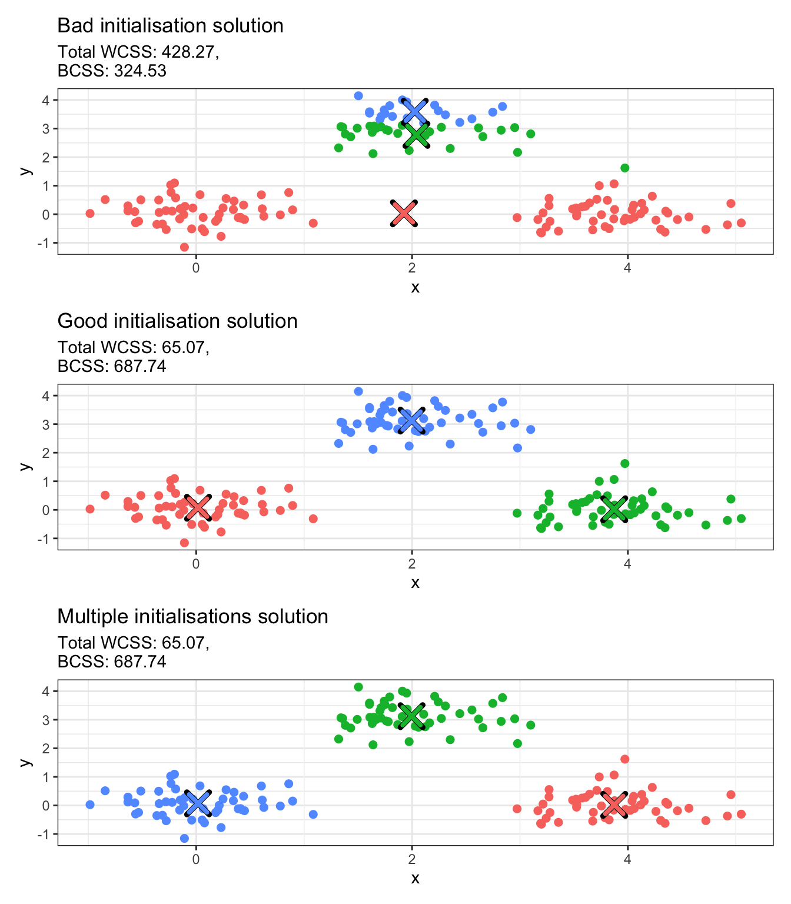
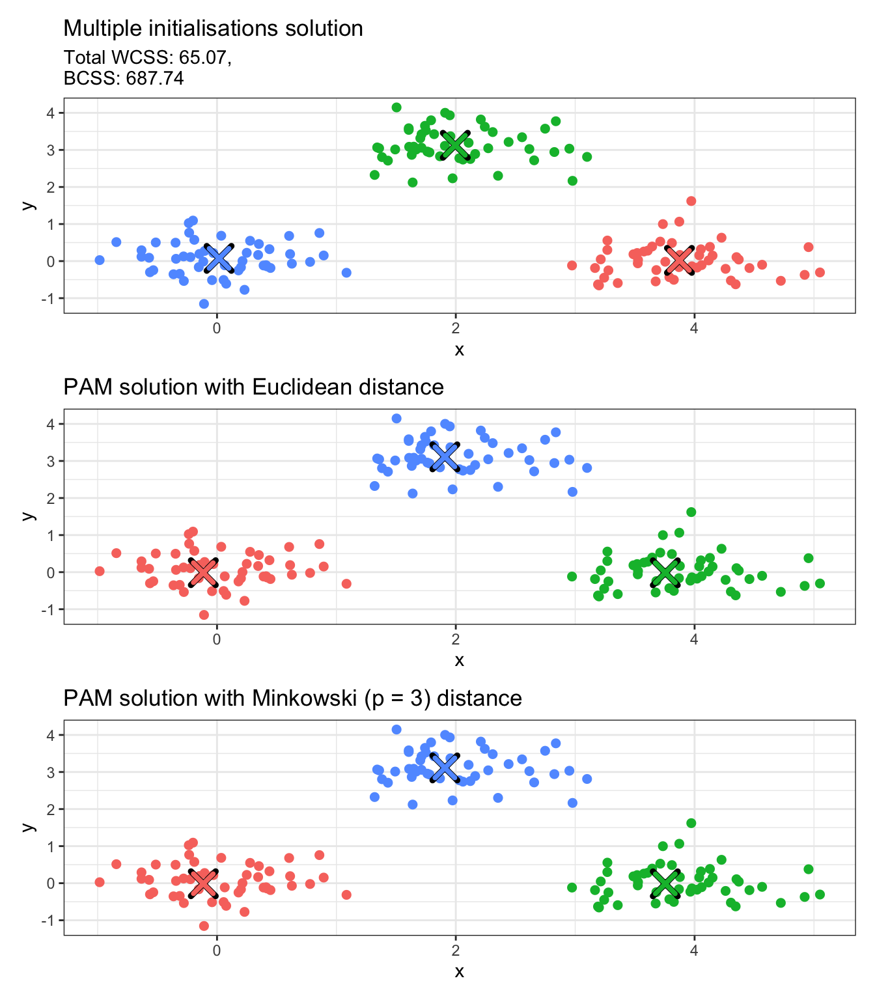

Definition (Partitional Clustering): A clustering algorithm that divides a data set into a fixed number \(k\) of non-overlapping, exhaustive clusters, where each data point belongs to exactly one cluster is called a partitional clustering algorithm.
❓ Isn’t every clustering algorithm partitional?
It is natural to wonder about that. We do care about obtaining a partition of our data set, but clustering algorithms can give us more than just that, as we will see later.
K-Means
This is probably the most commonly used and studied clustering algorithm. It is simple, easy to understand and implement, and produces easy-to-interpret clusters.
Definition (K-Means): K-Means clustering is an iterative, partitional clustering algorithm that partitions \(n\) data points into \(K\) pre-defined, non-overlapping clusters, where each point belongs to the cluster with the nearest mean, minimising the within-cluster variance.
More specifically, given a data set of \(n\) continuous \(p\)-dimensional observations \(\mathbf{X}\), the K-Means algorithm seeks to find a partition of the data points into \(K\) groups. This partition, denoted by \(\mathcal{C} = \{C_1, \ldots, C_K\}\), is chosen among the set of all partitions into \(K\) non-empty groups \(\mathcal{P}_K\) to minimise the within-cluster sum of squares, which acts as a measure of cluster variability. More formally, the K-Means objective is formulated as follows:
The name “K-Means” is not random. The algorithm was named like that because it seeks to minimise the distance between points and their respective cluster’s mean, denoted by \(\mathbf{m}_k\) for cluster \(1 \leq k \leq K\) above. The \(\mathbf{m}_k\)’s are called the cluster centroids as they are the most centrally-located observations in their cluster. Can you prove this result?
(Hint: Fix a cluster\(k\) and differentiate with respect to \(\mathbf{m}_k\). Do you get \(\mathbf{m}_k = \frac{1}{\lvert C'_k \rvert} \sum\limits_{i: \mathbf{x}_i \in C'_k} \mathbf{x}_i\)?)
❓ Do I have to use the Euclidean distance?
No! You can use any distance or dissimilarity function of your choice! For instance, if you use the Manhattan distance, you will implement the K-Medians clustering algorithm. (Can you see why it is called “K-Medians”?)
K-Means Implementation
K-Means is an iterative algorithm, that is, it uses an iterative relocation process that updates the cluster assignments until these remain unchanged. Here are the steps of K-Means:
Initialise: Choose \(K\) initial centroids \(\mathbf{m}_1^{(0)}, \ldots, \mathbf{m}_K^{(0)}\), set \(t \leftarrow 1\) and converged\(\leftarrow\)FALSE.
Iterative steps: While \(t \leq t^\text{max}\) and converged\(\neq\)TRUE do:
Assign: Assign each observation to the cluster with its nearest centroid: \[
C_k^{(t)} = \{\mathbf{x}: \| \mathbf{x} - \mathbf{m}_k^{(t-1)} \| \leq \| \mathbf{x} - \mathbf{m}_j^{(t-1)} \| \ \forall k \neq j \}.
\]
Update: Update the cluster centroids by computing the cluster means for the updated cluster assignments: \[
\mathbf{m}_k^{(t)} = \frac{1}{\lvert C_k^{(t)}\rvert }\sum\limits_{\mathbf{x} \in C_k^{(t)}} \mathbf{x}
\]
Convergence check: If \(\mathbf{m}_k^{(t)} = \mathbf{m}_k^{(t-1)} \ \forall 1 \leq k \leq K\), set converged\(\leftarrow\)TRUE.
The iterative process in Step 2 is repeated until either convergence is achieved (i.e. cluster assignments remain unchanged) or until a maximum number of iterations \(t^\text{max}\) is reached. The K-Means algorithm usually converges in a few steps, so it’s only a matter of choosing \(t^\text{max}\) not to be too small (e.g.\(t^\text{max} = 2\) is not enough).
K-Means in R
K-Means is implemented using the kmeans function in R. We generate a toy example to illustrate how the function works. The code below generates a data set with three well-separated clusters and runs K-Means with 3 clusters (input argument centers = 3), allowing up to 100 iterations until convergence (input argument iter.max = 100).
# Set seed for reproducibilityset.seed(123)# Create a data set with 3 well-separated clusters with 50 observations eachn <-50cluster1 <-data.frame(x =rnorm(n, mean =0, sd =0.5),y =rnorm(n, mean =0, sd =0.5))cluster2 <-data.frame(x =rnorm(n, mean =4, sd =0.5),y =rnorm(n, mean =0, sd =0.5))cluster3 <-data.frame(x =rnorm(n, mean =2, sd =0.5),y =rnorm(n, mean =3, sd =0.5))data <-rbind(cluster1, cluster2, cluster3)# Set the true labels (will not be used but good to have)true_labels <-rep(1:3, each = n)data_kmeans <-kmeans(x = data,centers =3,iter.max =100)# Inspect kmeans object structurestr(data_kmeans)
List of 9
$ cluster : int [1:150] 3 3 3 3 3 3 3 3 3 3 ...
$ centers : num [1:3, 1:2] 1.9957 3.873 0.0172 3.1247 0.0194 ...
..- attr(*, "dimnames")=List of 2
.. ..$ : chr [1:3] "1" "2" "3"
.. ..$ : chr [1:2] "x" "y"
$ totss : num 753
$ withinss : num [1:3] 21.9 22.6 20.5
$ tot.withinss: num 65.1
$ betweenss : num 688
$ size : int [1:3] 50 50 50
$ iter : int 2
$ ifault : int 0
- attr(*, "class")= chr "kmeans"
💡 Fun fact
The input argument centers in the kmeans function can either take an integer that represents the number of clusters, or initial cluster centroids If an integer value is provided (as we did above), the initial centroids are chosen randomly.
Some interesting things included in the output are:
cluster: The clustering output. A vector of integers from 1 up to \(K\) (in this case \(K=3\)) indicating the cluster each observation is assigned to.
centers: The cluster centroids; a \((K \times p)\)-dimensional matrix, where row \(k\) represents \(\mathbf{m}_k\).
size: A \(K\)-dimensional vector including the size of each cluster, i.e. number of observations assigned to each cluster.
iter: The number of iterations the algorithm needed to reach convergence.
The output of the kmeans function includes some sum of squares values, specifically the between-cluster sum of squares (betweenss) and the within-cluster sum of squares (withinss). These are metrics which are related to how “tight” and how “separated” the clusters are. Specifically:
\[
\begin{align*}
\text{BCSS} = \sum\limits_{k=1}^K \lvert C_k \rvert \| \mathbf{m}_k - \bar{\mathbf{x}} \|^2,\\
\text{WCSS} = \sum\limits_{k=1}^K \sum\limits_{\mathbf{x}_i \in C_k} \| \mathbf{x}_i - \mathbf{m}_k \|^2,
\end{align*}
\] with \(\bar{\mathbf{x}}\) representing the overall mean vector of the whole data set.
❓ How are these related to the K-Means objective?
Can you see how the BCSS and the WCSS relate to the objective of K-Means?
Initialisation matters
K-Means is sensitive to initialisation. The code below runs K-Means on the toy data set we generated above using two different initialisations. It then plots the cluster solutions in a scatter plot, where each point is coloured according to the cluster it has been assigned to.
library(ggplot2)library(patchwork)# Bad initialisation; all initial centers are close togetherbad_centers <-rbind(c(1.8, 2.8), c(2.0, 3.0), c(2.2, 3.2))km_bad <-kmeans(data, centers = bad_centers, iter.max =100)# Good initialisation; spread centers across the datagood_centers <-rbind(c(0, 0), c(4, 0), c(2, 3))km_good <-kmeans(data, centers = good_centers, iter.max =100)# Convert integer values to factorsdata_copy <- datadata_copy$bad_cluster <-factor(km_bad$cluster)data_copy$good_cluster <-factor(km_good$cluster)# Convert centers to data frames with proper column namesbad_centers_df <-as.data.frame(km_bad$centers)bad_centers_df$cluster <-factor(1:nrow(bad_centers_df))names(bad_centers_df) <-c("x", "y", "cluster")good_centers_df <-as.data.frame(km_good$centers)good_centers_df$cluster <-factor(1:nrow(good_centers_df))names(good_centers_df) <-c("x", "y", "cluster")# Create plotsp1 <-ggplot(data_copy, aes(x = x, y = y, color = bad_cluster)) +geom_point(size =2) +geom_point(data = bad_centers_df, aes(x = x, y = y), color ="black", size =5, shape =4, stroke =2.5) +geom_point(data = bad_centers_df, aes(x = x, y = y, color = cluster), size =4, shape =4, stroke =2) +labs(title ="Bad initialisation solution",subtitle =paste0("Total WCSS: ", round(km_bad$tot.withinss, 2),",\nBCSS: ", round(km_bad$betweenss, 2))) +theme_bw() +theme(legend.position ="none")p2 <-ggplot(data_copy, aes(x = x, y = y, color = good_cluster)) +geom_point(size =2) +geom_point(data = good_centers_df, aes(x = x, y = y), color ="black", size =5, shape =4, stroke =2.5) +geom_point(data = good_centers_df, aes(x = x, y = y, color = cluster), size =4, shape =4, stroke =2) +labs(title ="Good initialisation solution",subtitle =paste0("Total WCSS: ", round(km_good$tot.withinss, 2),",\nBCSS: ", round(km_good$betweenss, 2))) +theme_bw() +theme(legend.position ="none")# Combine plotsp1 / p2
❓ Can you explain what is happening?
The crosses above represent the cluster centroids obtained with the 2 different initialisations. Can you explain what has happened and why these are different? If you were to select one of the two solutions, which one would you choose? What does this tell us about the BCSS and the WCSS?
The example above shows that K-Means can be very sensitive to initialisation. There are two ways that this can be alleviated:
Manually give a good initialisation (harder but quicker)
Try multiple random initialisations (easier but slower)
The first option is harder because it requires having an idea of what the cluster centroids are in advance of performing clustering. But this is a bit counterintuitive, as the ultimate goal of clustering is to detect group structures that we do not know beforehand. This is why multiple initialisations (i.e. the second option) is almost always preferred. This can be significantly more expensive, as it involves re-running the algorithm and then comparing all solutions, but kmeans is a highly optimised function that runs very fast for a large number of resimulations. The number of times the function runs with different random initial centroids is controlled via nstart. Once solutions have been obtained for all random initialisations, the optimal solution that is returned is the one with the lowest WCSS and the highest BCSS (favouring well-separated compact clusters).
We run the example from above with 100 random initialisations in the chunk below.
# Multiple initialisations; spread centers across the datakm_multi <-kmeans(data,centers =3,nstart =100,iter.max =100)# Convert integer values to factorsdata_copy$multi_clust <-factor(km_multi$cluster)# Convert centers to data frames with proper column namesmulti_clust_df <-as.data.frame(km_multi$centers)multi_clust_df$cluster <-factor(1:nrow(multi_clust_df))names(multi_clust_df) <-c("x", "y", "cluster")# Create plotp3 <-ggplot(data_copy, aes(x = x, y = y, color = multi_clust)) +geom_point(size =2) +geom_point(data = multi_clust_df, aes(x = x, y = y), color ="black", size =5, shape =4, stroke =2.5) +geom_point(data = multi_clust_df, aes(x = x, y = y, color = cluster), size =4, shape =4, stroke =2) +labs(title ="Multiple initialisations solution",subtitle =paste0("Total WCSS: ", round(km_multi$tot.withinss, 2),",\nBCSS: ", round(km_multi$betweenss, 2))) +theme_bw() +theme(legend.position ="none")# Combine plotsp1 / p2 / p3

❓ Different output each time?
In the plot above, the good initialisation and the multiple initialisations solutions produce different clustering labels. If you rerun kmeans with multiple initialisations on the data, you will see that these labels keep switching. Is this a problem?
K-Medoids
Definition (K-Medoids): K-Medoids is an iterative, partitional clustering algorithm that partitions \(n\) data points into \(K\) pre-defined, non-overlapping clusters, where each cluster is represented by one of its actual data points (called a medoid), and each point is assigned to the cluster whose medoid is closest to it with respect to a given dissimilarity function.
K-Medoids is flexible in the sense that it allows for any dissimilarity function to be used.
❓ Isn’t that just K-Means when we use the Euclidean distance?
Actually no! The main difference here is that K-Medoids uses actual observations as the “cluster-representative points” (medoids), whereas the centroid in K-Means can (and usually is) some arbitrary point in \(\mathbb{R}^p\). Can you think of a case where that could make a difference?
K-Medoids Implementation
We present an implementation of K-Medoids called Partitioning Around Medoids (PAM). Other implementations also exist but this is probably the most well-known and most widely used one.
Initialise: Choose \(K\) initial medoids \(M^{(0)} = \{\mathbf{m}_1^{(0)}, \ldots, \mathbf{m}_K^{(0)}\}\), set \(t \leftarrow 1\) and converged\(\leftarrow\)FALSE.
Iterative steps: While \(t \leq t^\text{max}\) and converged\(\neq\)TRUE do:
Assign: Assign each point to nearest medoid: \[
C^{(t)}_k = \{\mathbf{x} \in \mathbf{X} : d(\mathbf{x}, \mathbf{m}^{(t-1)}_k) \leq d(\mathbf{x}, \mathbf{m}^{(t-1)}_j) \ \forall j \neq k\}
\]
Update/Swap: Compute total cost change \(\Delta_{ik}^{(t)}\) of swapping each medoid \(\mathbf{m}_k^{(t)}\) to observation \(\mathbf{x}_i\) for all non-medoids \(\mathbf{x}_i \in \mathbf{X} \backslash M^{(t-1)}\). If \(\min\limits_{k,i} \Delta_{ik}^{(t)} < 0\), perform the best swap to update medoids \(M^{(t)}\).
Convergence check: If \(\mathbf{m}_k^{(t)} = \mathbf{m}_k^{(t-1)} \ \forall 1 \leq k \leq K\), set converged\(\leftarrow\)TRUE.
Increment: Set \(t \leftarrow t + 1\).
Output: Final partition and medoids.
Notice that the cost change \(\Delta_{ik}\) is given by:
\[
\Delta_{ik}^{(t)} = \sum_{s=1}^n \left[ \min_{\ell=1,\ldots,K} d\left(\mathbf{x}_s, \widetilde{\mathbf{m}}_\ell^{(ik)}\right) - \min_{\ell=1,\ldots,K} d\left(\mathbf{x}_s, \mathbf{m}_\ell^{(t-1)}\right) \right]
\] where \(d\) is a dissimilarity function and \(\widetilde{\mathbf{m}}_\ell^{(ik)} = \mathbf{x}_i\) if \(\ell = k\), else \(\widetilde{\mathbf{m}}_\ell^{(ik)} = \mathbf{m}_\ell^{(t-1)}\). This computes the total change in dissimilarity if we swap medoid \(\mathbf{m}_k^{(t-1)}\) with observation \(\mathbf{x}_i\). The first term is the minimum distance to medoids after the swap, the second term is the minimum distance before the swap.
💡 Fun fact
Unlike K-means which computes centroids as means, PAM tests every possible swap between current medoids and non-medoids. This corresponds to \(K \times (n-K)\) swaps per iteration! The swap that reduces the total dissimilarity the most is chosen in each updating step. This exhaustive search makes PAM more computationally expensive.
K-Medoids in R
K-Medoids, and more specifically PAM, is implemented using the pam function from the cluster package in R. We will use the same toy data set as before with 3 clusters (input argument k = 3) and the Euclidean distance as our dissimilarity (diss = "euclidean"), with 100 random medoid initialisations (nstart = 100).
We see that there are several things included in the output of the pam function. The ones to mainly keep in mind are clustering, which corresponds to the cluster allocation, and medoids, which includes the cluster medoids (these are actual observations in our data set). We also provide an illustration of the result below:
# Convert integer values to factorsdata_copy$pam_euclid <-factor(data_pam_euclid$clustering)# Convert centers to data frames with proper column namespam_euclid_df <-as.data.frame(data_pam_euclid$medoids)pam_euclid_df$cluster <-factor(1:nrow(pam_euclid_df))names(pam_euclid_df) <-c("x", "y", "cluster")# Create plotp4 <-ggplot(data_copy, aes(x = x, y = y, color = pam_euclid)) +geom_point(size =2) +geom_point(data = pam_euclid_df, aes(x = x, y = y), color ="black", size =5, shape =4, stroke =2.5) +geom_point(data = pam_euclid_df, aes(x = x, y = y, color = cluster), size =4, shape =4, stroke =2) +labs(title ="PAM solution with Euclidean distance") +theme_bw() +theme(legend.position ="none")# Combine plotsp3 / p4
❓ Is there no stopping criterion in PAM?
Yes, this is either convergence of the algorithm or exceeding \(t^\text{max}\) as mentioned in the earlier steps. However, the pam function does not include the latter and runs until it reaches convergence.
Alternative dissimilarities can be used for PAM. The metric input argument only accepts "euclidean" or "manhattan", in which case a dissimilarity matrix is constructed internally and it is then used for cluster allocation. However, let us suppose we wish to use the Minkowski distance with power \(p = 3\). In such a case, we can construct the dissimilarity/distance matrix with the dist function and pass it as our main input argument x to pam, setting diss = TRUE to indicate that the main input argument x is a dissimilarity/distance matrix. Notice that when you input a distance/matrix, the medoids output only gives the observation indices for the medoids and not the actual points.
mink3_distmat <-dist(x = data,method ="minkowski",p =3)data_pam_mink3 <-pam(x = mink3_distmat,k =3,diss =TRUE,nstart =100)# Convert integer values to factorsdata_copy$pam_mink3 <-factor(data_pam_mink3$clustering)# Convert centers to data frames with proper column namespam_mink3_df <-as.data.frame(data[data_pam_mink3$medoids, ])pam_mink3_df$cluster <-factor(1:nrow(pam_mink3_df))names(pam_mink3_df) <-c("x", "y", "cluster")# Create plotp5 <-ggplot(data_copy, aes(x = x, y = y, color = pam_mink3)) +geom_point(size =2) +geom_point(data = pam_mink3_df, aes(x = x, y = y), color ="black", size =5, shape =4, stroke =2.5) +geom_point(data = pam_mink3_df, aes(x = x, y = y, color = cluster), size =4, shape =4, stroke =2) +labs(title ="PAM solution with Minkowski (p = 3) distance") +theme_bw() +theme(legend.position ="none")# Combine plotsp3 / p4 / p5

🚀 Time to practice!
The iris data set includes three iris species with 50 samples each as well as some properties about each flower. Load the iris data in R (just use data(iris) to load it to your working environment). Remove the final column that corresponds to the Species of the iris flowers and use the remaining columns to run clustering. Use K-Means or PAM with dissimilarity functions of your choice and compare your results. Change some of the input arguments of kmeans and pam and check what happens.
(You may find it helpful to look up the documentation of kmeans and pam by typing ?kmeans and ?pam in your console).
Key takeaways
Partitional clustering algorithms divide a data set into a fixed number of exhaustive, non-overlapping clusters.
K-Means is a partitional clustering algorithm that seeks to minimise the within-cluster-variance.
K-Medoids is a generalisation of K-Means to use any dissimilarity function but requires cluster representative points to be actual observations from the data set.
Both K-Means and K-Medians are sensitive to initialisation.
K-Means and K-Medoids are implemented in R using kmeans and pam, respectively.